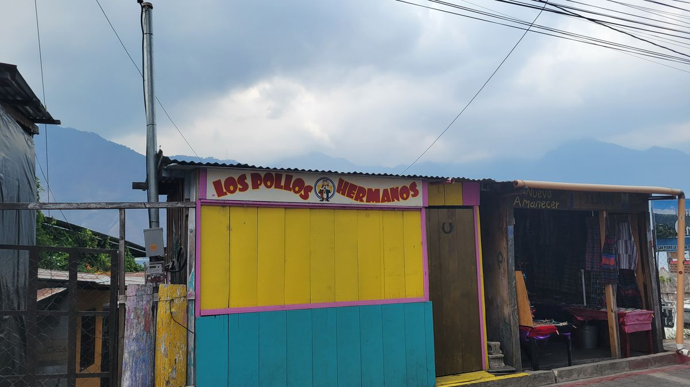
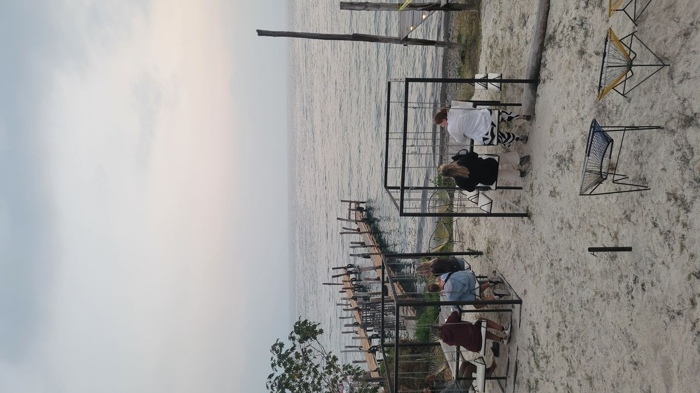
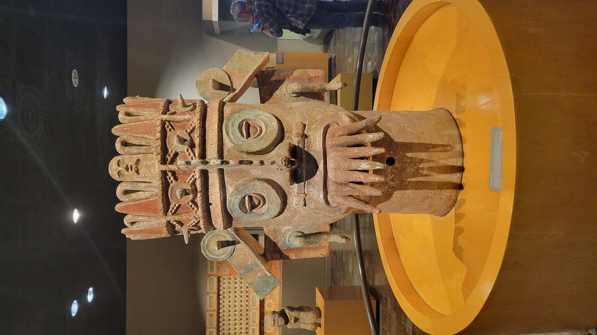
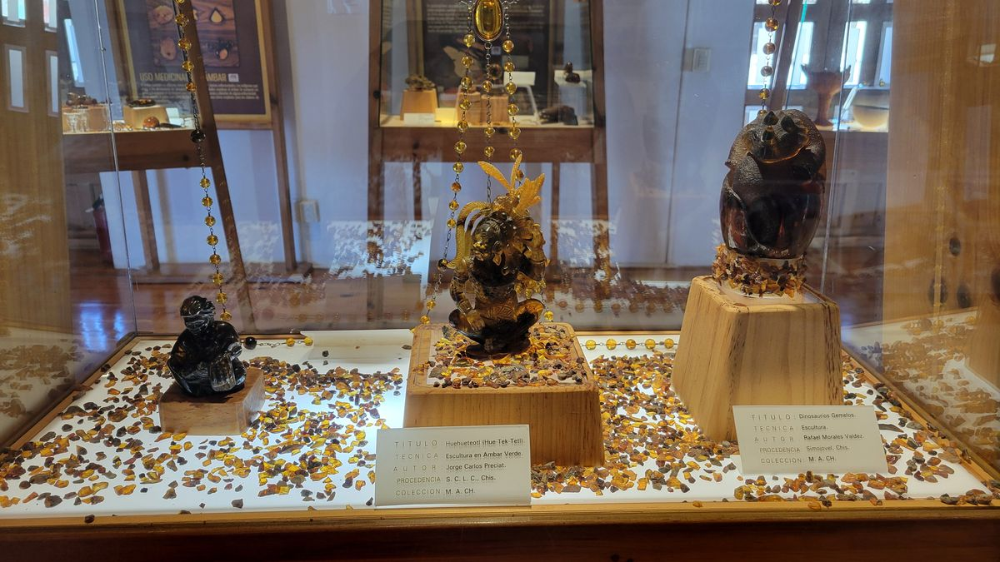
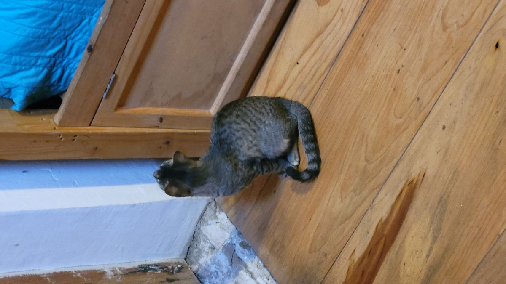
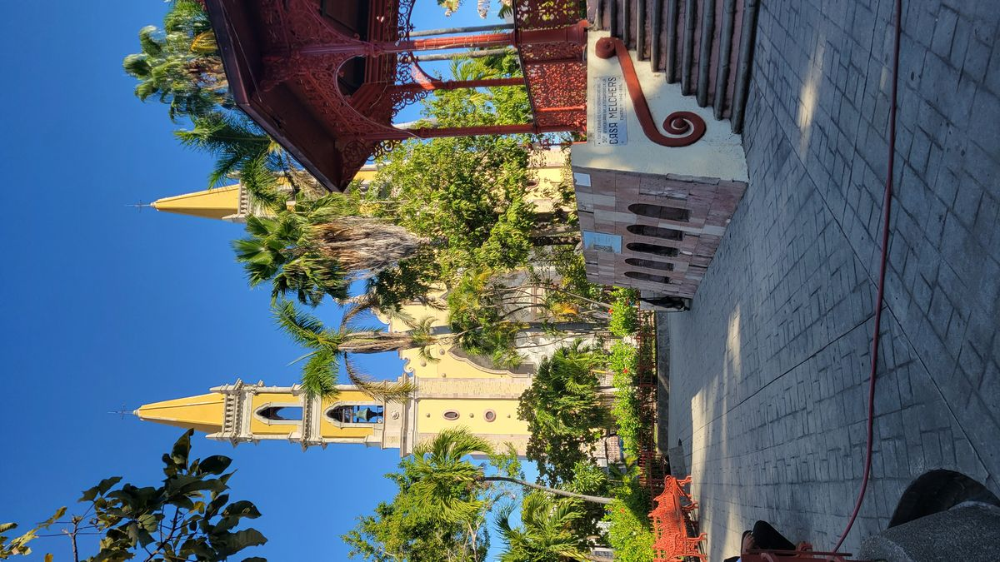
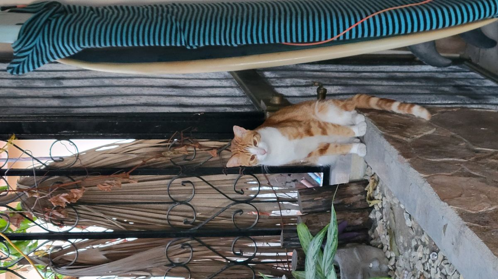
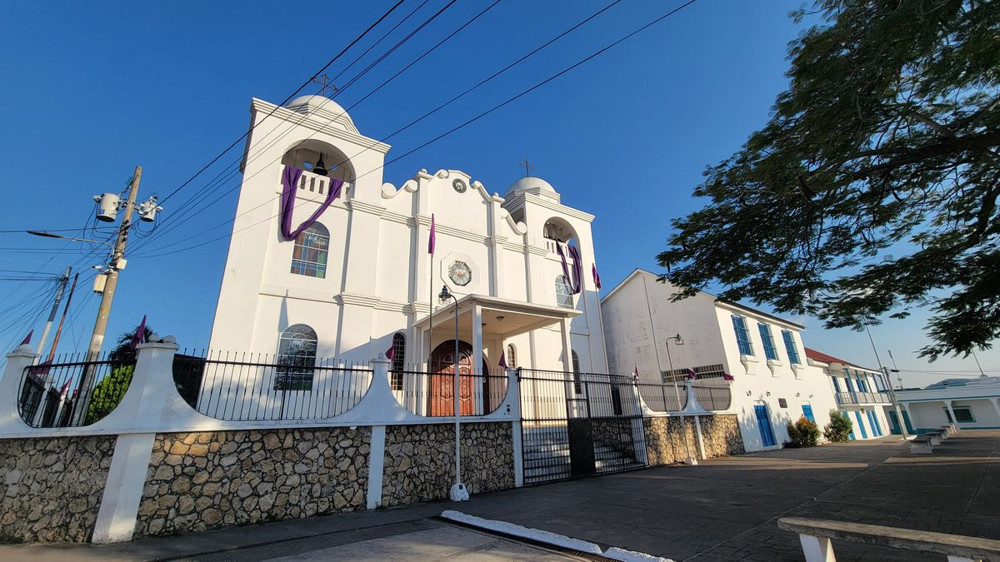
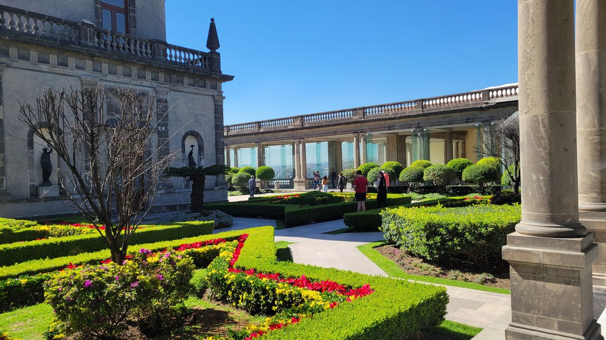

Reflections of Central America
Firstly, the security situation in Central America is greatly overstated. While you should not ignore the warnings issued by governments and passed on by other travelers, just keeping your wits about you and remembering why you are visiting these places and you will probably be fine. DON’T GO LOOKING FOR TROUBLE AND TROUBLE WILL HAVE A HARDER TIME FINDING YOU. Literally, millions of people from around the globe visit this part of the world EVERY YEAR and have no issues.
Now that I got that put of the way Central America is a large and very diverse area. A lot more diverse than you might initially assume. You see group of countries located closely together, that speak the same language, follow the same religion and have a shared history of conquest and colonization by the same old world power, but as soon as you take a deeper dive into the geography and culture of the area, you find that to not be entirely true.
From the ancient, pre-Hispanic languages still spoken in the highlands of Mexico, to the religious rituals combining the more modern Catholic practices with the ancient Mayan traditions practiced in the villages of Lake Atitlan in Guatemala (check out Maximón for more about that one). It doesn’t take long to realize that Central America is not as homogeneous as it would first seem.
People were always welcoming and willing to help a confused tourist if you seemed lost enough. The stereotype of the destitute Latino often portrayed in the North American media, couldn’t be further from the truth. Of, course there isn’t as much money flowing around in those parts of the world and poverty is more prevalent, most people don’t consider themselves to be poor. While, poverty is quantifiable, poor is a state of mind. Everyone is doing the same things we all are, trying to do what’s best for their families and themselves with whatever cards they have been dealt.
My travels only scratched the surface of what there is to see and experience in this wonderful part of the world and I’m sure that I will return to delve deeper in the history and culture of this region.
Until then, here’s a few photos I never posted from my travels the last few months. I’ve got hundreds of photos that will probably never see the light of day since being uploaded to my external hard drive, so we will give some of the other more worthy contenders some airtime here.








